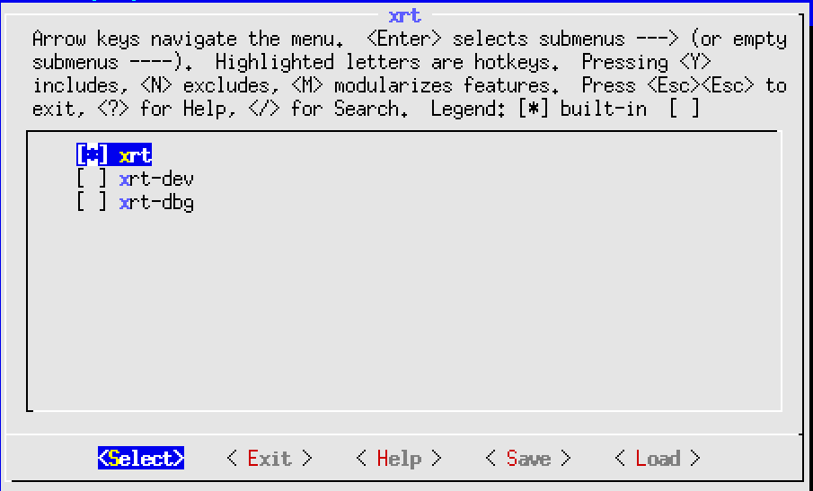
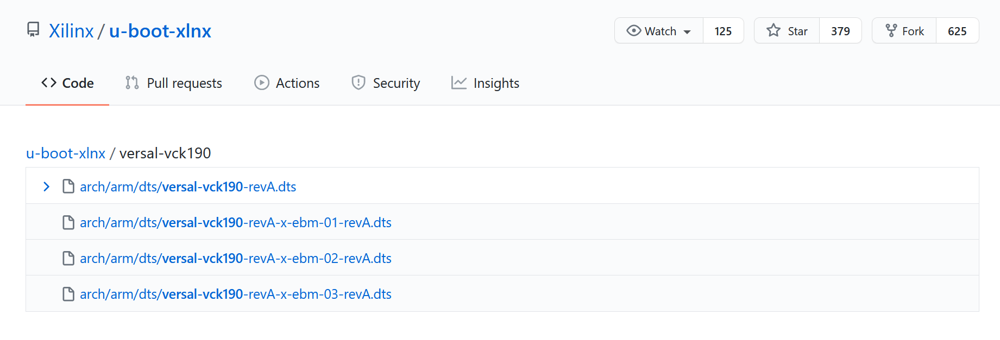

Versal Custom Platform Creation Tutorial |
Step 2: Create the Software Components with PetaLinux¶
In this step, we’ll create a PetaLinux project that includes Vitis Platform required components.
Create the PetaLinux Project¶
Setup PetaLinux environment:
source <petaLinux_tool_install_dir>/settings.shCreate PetaLinux Project with XSA we created in previous step
petalinux-create -t project --template versal --force -n petalinux cd petalinux petalinux-config --get-hw-description=<path to xsa directory> --silentconfig
The created PetaLinux project name is petalinux. Please feel free to change the PetaLinux project name with petalinux-create -n option.
Note: PetaLinux 2021.2 requires GCC version >= 6.0. If your GCC version doesn’t meet this requirement, please enable Enable buildtools extended from petalinux-config → Yocto settings, which uses the pre-compiled gcc binaries from the PetaLinux tool. For more information, please refer to UG1144.
Customize Root File System, Kernel, Device Tree and U-boot¶
Add XRT to rootfs packages
Run
petalinux-config -c rootfs.In the configuration window, use
/key to open search function.Type in
xrtand press Enter.In the search result page, press the number of
Symbol: xrtresult, for example 1.In the page of XRT configuration page, go to the line of
xrtand press space to enable it.Select Exit twice to return to the main configuration page.

In rootfs config, go to Image Features and enable package-management, debug_tweaks and auto-login option, store the change and exit rootfs configuration.
The package-management feature allows you to install packages during run time. It’s optional but recommended.
The debug_tweaks package removes security requirements. It makes debugging easier. You should remove this package when you release your design for production.
Exit from user packages to root configuration window by select Exit and press Enter.
Select Image Features and enter.
Enable package-management and debug_tweaks by pressing space key. Sub items of package-management is not needed.
Exit
Exit
Save
Use EXT4 as rootfs format for SD card boot (Recommended)
PetaLinux uses initrd format for rootfs by default. This format extracts rootfs in DDR memory, which means it reduces the usable DDR memory for runtime and can’t retain the rootfs changes after reboot. To enable the root file system to retain changes, we’ll use EXT4 format for rootfs as the second partition on SD card while keep the first partition FAT32 to store other boot files.
Run
petalinux-configGo to Image Packaging Configuration, select Root File System Type as EXT4.

Customize Device-tree¶
Apply VCK190 device tree
Run
petalinux-configGo to DTG Settings
Enter versal-vck190-reva-x-ebm-02-reva for MACHINE_NAME option (Config option name is CONFIG_SUBSYSTEM_MACHINE_NAME)
Note: This preset device setting adds ethernet PHY info to device tree for VCK190 board. The device tree source code will be applied to the PetaLinux project. If your VCK190 board version is different, please check the device tree source code directory whether it has a corresponding device tree version for your board and apply it in the PetaLinux project. You can clone the git repository, or use find file feature in github.

(Optional) Update the system-user device tree.
If you have any custom peripherals on board that needs special settings, please update it in system-user.dtsi.
Note: From 2021.1, PetaLinux will detect XSA type and generate ZOCL node in device tree automatically and update interrupt input number according to your hardware settings in XSA if the XSA is an extensible XSA. User doesn’t need to make device tree modification for Vitis acceletaion manually.
Build PetaLinux Image¶
From any directory within the PetaLinux project, build the PetaLinux project.
petalinux-build
The PetaLinux build will make use of multiple CPU cores on your machine and do parallel compiling to increase the build speed. The build time can vary from 30 minutes to more than one hour depends on your build machine hardware setup.
The generated u-boot and Linux images will be located in images/linux directory.
Build sysroot
petalinux-build --sdk
Sysroot sdk.sh will be generated in images/linux directory. We will extract it in next step.
Next Step¶
Now we have generated platform hardware and software. Next we would go to step 3 to package the Vitis Platform.
Fast Track¶
Scripts are provided to re-create PetaLinux project and generate outputs. To use these scripts, please run the following steps.
Run build
# cd to the step directory, e.g. cd step2_petalinux make
To clean the generated files, please run
make clean
Copyright© 2021 Xilinx